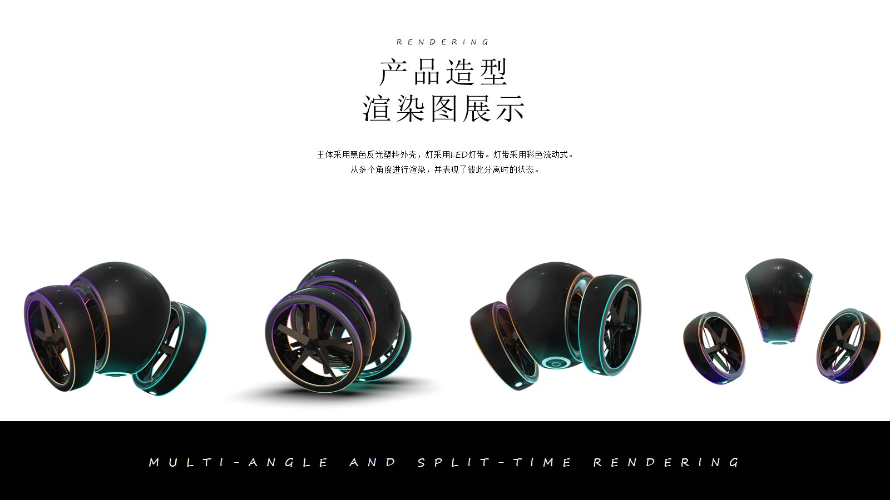

Guardian无人机产品旨在为夜间单独出行的城市居民提供安全保障。只需通过app下单租赁，Guardian无人机就会从最近的站点飞来，通过红外跟随技术一路跟随着用户到达目的地。
护送期间，Guardian无人机能够为用户提供照明光源、附近可疑跟随人物提醒的功能（红外摄像机采集可疑人的人脸图像后通过比对公安犯罪记录数据库来评判风险），并且用户能够通过app一键报警；在用户人身安全受到威胁时，采用分体式设计的Guardian无人机左右两只飞轮会飞离母体（此时母体依靠喷气悬停），从不同方向对着歹徒的眼睛发出闪烁的强光来眩晕歹徒、并发出蜂鸣警报吸引附近人的注意。